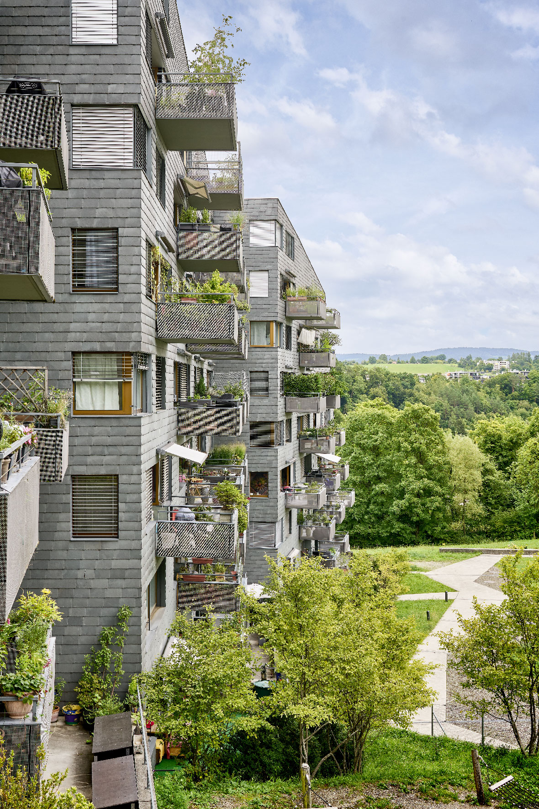
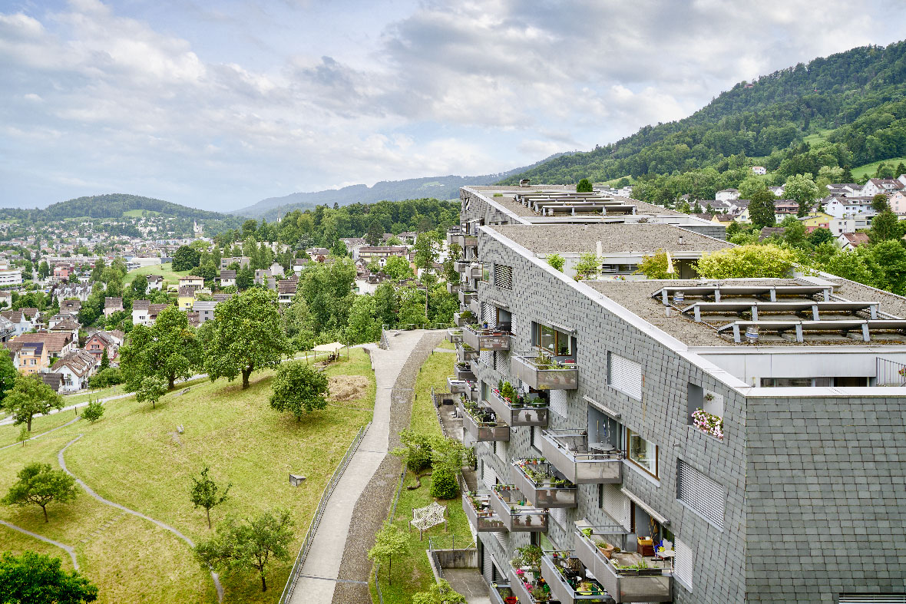
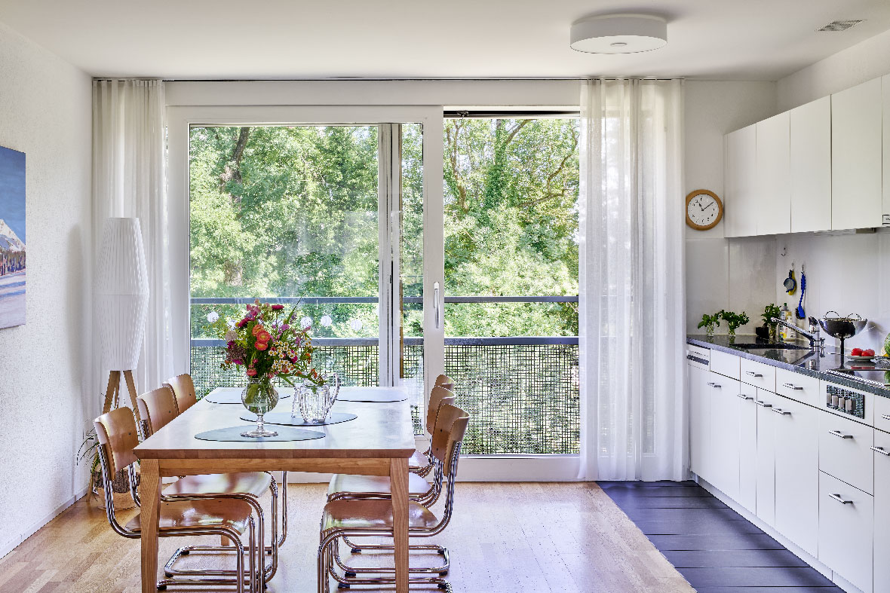
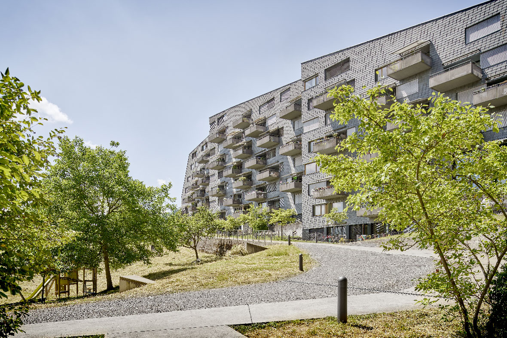

About


Von Süden durch das Silhltal kommend kündet sich die nahende
Stadt Zürich durch die Hochhäuser von Leimbach und die neue,
siebengeschossige Wohnsiedlung Leimbachstrasse an.
Die Wohnüberbauung ist ein Bekenntnis, dass auch an Peripherie
Stadt prägnant gebaut werden kann, ohne in Monotonie zu fallen.
Interior


Alle Wohnungen verfügen über grosse Balkone, bzw. Garten- oder
Dachterrassen. Die raumhoch verglasten, durchgestanzten Wohnzimmer
sind nach zwei Seiten offen, eine Mehrzahl der Zimmer ist auf den
Obstgarten gerichtet. Die Überbauung ist im Minergie-Standard
ausgeführt und wird mit Holzschnitzel aus dem nahen Sihlwald geheizt.
Outdoor


Ein netzartiges Wegsystem erschliesst die Wohnbauten und geht
nahtlos in den öffentlichen Fussweg entlang der Siedlung über.
Durch partielle Verbreiterungen der Wege entstehen Plätze und
Kleinstplätze mit Aufenthalts- und Spielmöglichkeiten, am
Geländefuss wird eine vielseitig nutzbare Rasenfläche angeboten.
Lageplan